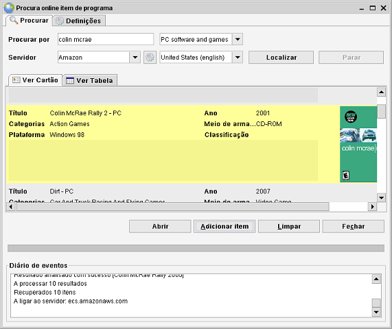

Procura online
Caminho de menu: Ferramentas > Procura online
O Data Crow pode poupar-lhe tempo procurando informação sobre um item numa base de dados online, como a Amazon, o IMDB.com,
ou a Freedb.

Iniciar uma procura
A procura online está disponível para o formulário de item (para atualiza r um item existente), na barra de menu e
na barra de ferramentas. Antes de encontrar o item que procura, certifique-se que selecionou o servidor correto. Cada servidor
tem as suas próprias opções. Por exemplo, quando escolhe um servidor da Amazon, pode selecionar a
localização que quer usar. O servidor localizado na Alemanha dá-lhe descrições em alemão, etc.
Por predefinição o Data Crow procura palavras-chave. Se houver outros modos de procura disponíveis, serão
mostrados atrás do campo Procurar por. Pode simplesmente selecionar outro modo de procura (por exemplo) ISBN, Amazon ID (ASIN)
ou códigos de barras.
Clique em "Parar" para parar uma procura. A procura é interrompida e pode iniciar uma nova.
Clique em "Limpar" para eliminar os resultados anteriores.
Definições
Há várias definições a considerar.
Valores a encontrar
Ao procurar novos itens pode especificar que valores de campos devem ser procurados. Para isto, clique em "Definições"
e selecione todos os campos para os quais quer que o Data Crow encontre valores. Ao atualizar um item, existe uma opção
praticamente idêntica. Desta vez, contudo, seleciona os campos para os quais quer que os valores existentes sejam substituídos
(se quiser).
Econtrar todos os detalhes na procura inicial (lento)
Em vez de procurar o mínimo de informação pode optar por procurar por toda a informação de uma só vez.
Vai atrasar bastante a procura!
Atualizar ou adicionar automaticamente o item quando ocorrer uma coincidência perfeita
Ao selecionar esta opção o Data Crow pára a procura assim que encontrar uma coincidência perfeita.
Encontrar informação adicional em Pessoas & companhias (lento)
O Data Crow pode encontrar (na maioria dos casos) informação adicional sobre pessoas, como atores e companhias,
como empresas de programação. Esta opção está desativada por predefinição,
uma vez que atrasa bastante a procura online. Assim, as pessoas e companhias são criadas da mesma forma mas sem
informação adicional. Só têm o nome. Se ativar a opção, o Data Crow tentará
encontrar imagens e uma descrição. Note que pode, a qualquer altura, atualizar todas as pessoas e companhias,
usando a funcionalidade "Atualização em massa" (mais acerca disto)
do Data Crow ou uma por uma usando a procura online específica de cada módulo.
Adicionar os resultados ao Data Crow
Quando encontrar o resultado que procura, selecione o item ou itens e clique em "Adicionar item".
Os itens estão agora adicionados à sua coleção!
Para atualizar um item existente clique em "Atualizar". Os valores no formulário de item serão atualizados com os
valores do resultado selecionado. Antes de atualizar, verifique se quer substituir valores existentes. Se quiser, marque a caixa
"Substituir valores existentes" (desmarcada por predefinição). A definição será lembrada.